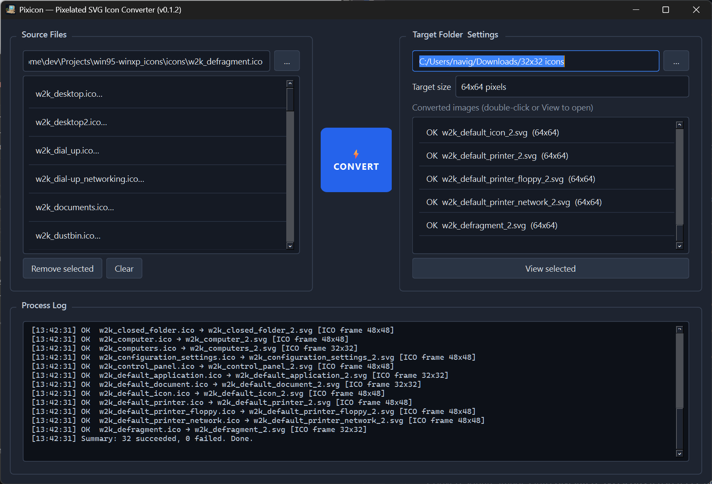

Free · Open source · Cross-platform
Pixicon
Turn square images into crisp, pixel-perfect SVG icons — nearest-neighbor sharp, batch-ready, no Python install required.
Looking up the latest release…

Built for icon work
Technical enough for pixel artists. Simple enough for a Friday afternoon cleanup.
-
Pixel-true SVG
Nearest-neighbor resize and merged rects with
crispEdges— icons stay sharp at any scale. -
Batch queue
Drop multiple PNG, JPEG, GIF, WebP, BMP, TIFF, or ICO files, pick a target size, convert in one pass.
-
ICO-aware
Multi-resolution icons pick the embedded frame that matches your target size, keeping transparency intact.
-
Runs everywhere
Standalone builds for Windows, Linux, and macOS. No runtime dependencies for end users.
Open source. Free forever.
Pixicon is MIT-licensed. Inspect the converter, file issues, or ship your own builds — the code lives in the open on GitHub.
View repository on GitHub